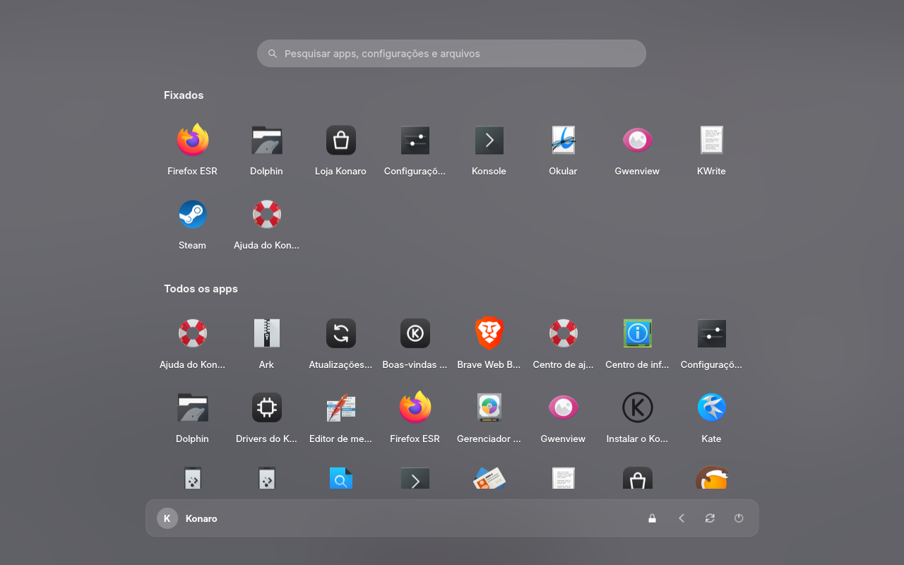
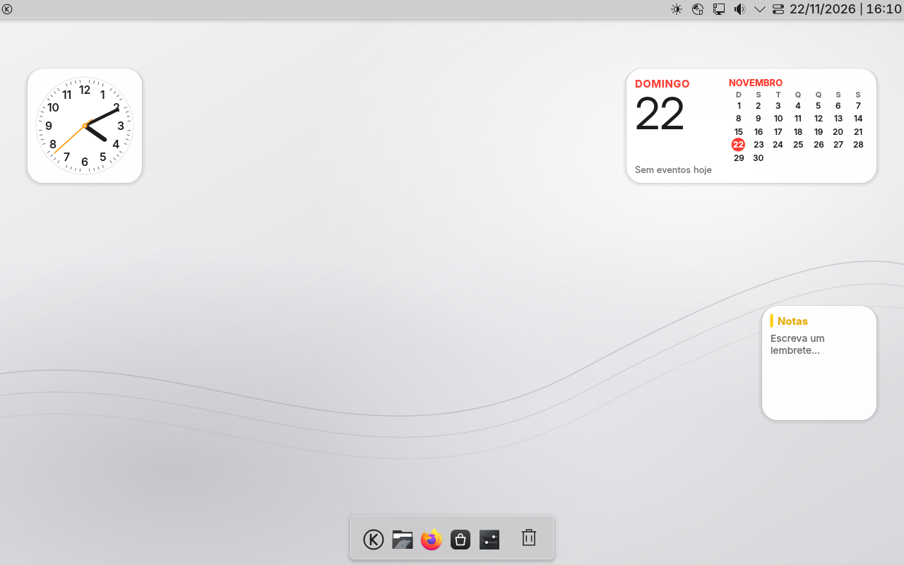
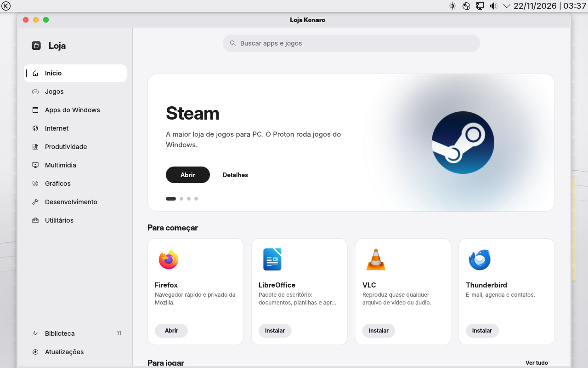
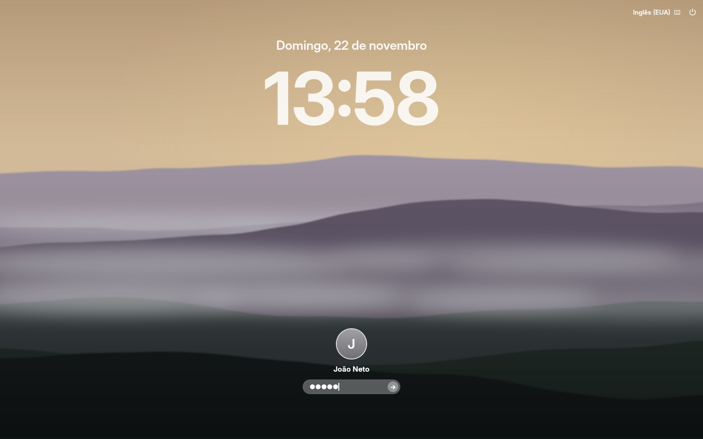
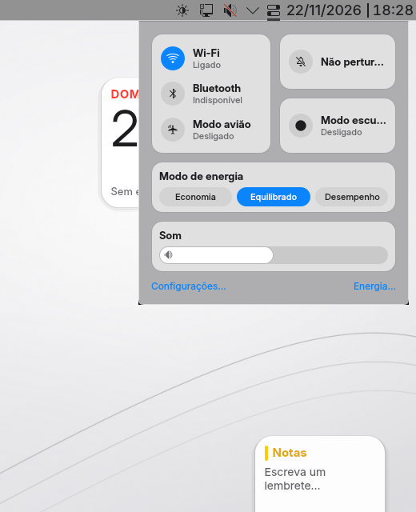
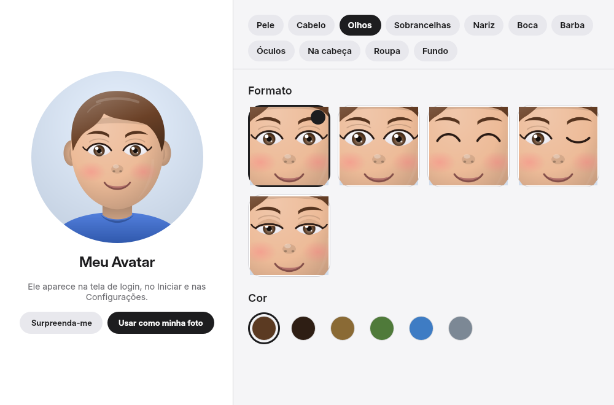

Iniciar com a tecla Windows
Busca, apps fixados e todos os apps em uma tela de vidro.
Um Linux bonito e fácil para quem vem do Windows e do macOS. Leve, sem telemetria e pronto para usar.

O visual vem do macOS, o jeito de usar vem do Windows, e a base é o Debian, um dos Linux mais estáveis do mundo.

Busca, apps fixados e todos os apps em uma tela de vidro.

Milhares de apps do Debian e do Flathub, instalados com um clique.

Hora grande, sua foto e a senha numa pílula de vidro.

Wi-Fi, Bluetooth, modo escuro, energia, som e bateria.

Crie um personagem com a sua cara para o seu perfil.
Três edições da versão Fênix: escolha a Lite se o seu computador for antigo, e a Lite 32 se o processador for de 32 bits. Cada ISO é um arquivo só; confira o código SHA-256 depois de baixar.
Correções importantes: a Loja não fecha mais, apps abrem e a tela não fica preta em computadores e máquinas virtuais com pouca memória (memória comprimida), downloads pela internet funcionam já na sessão de teste, senha nas Boas-vindas e chapéus do avatar ajustados. Com Liquid Glass, Loja com apps do GitHub, .deb e AppImage com dois cliques, firewall, GNOME/Xfce/Cinnamon/MATE e 12 cores de destaque. Para computadores com 4 GB de RAM ou mais. 2,4 GB · 25/11/2026
SHA-256 030d7025131a75331b7b2fa3e2fceab883cfc12542b8c13546e91188855ef1db
Baixar
Para computadores antigos (ex.: notebook de 2007 com 3 GB de RAM e processador de 64 bits). O mesmo visual e os mesmos apps, com memória comprimida, painéis sólidos, animações curtas, Firefox leve e suporte a placas de vídeo antigas. 1,7 GB · 25/11/2026
SHA-256 01b82a740d0ff6a25a27d662485e238becf2b482cfd973ceb863f3b74ecba396
Baixar
A mesma Fênix Lite para computadores de 32 bits (Pentium 4, Pentium M, Celeron M, Core Duo, Atom). Kernel do Debian 12 com atualizações até 2028; na Loja, só apps do Debian. 1,8 GB · 25/11/2026
SHA-256 f9cb5733e8e90d8c33ccda12eac50e96a2dac028bbe328d34a99a5fd5b0ec8ee
Baixar
As builds de desenvolvimento não ficam mais disponíveis para baixar: tudo o que elas tinham está na Fênix. O que mudou em cada uma continua aqui e no CHANGELOG.
Os arquivos ficam hospedados no Gofile. Histórico completo, com tudo o que mudou em cada versão, no CHANGELOG.
Comece testando numa máquina virtual ou pelo pendrive sem instalar: o Konaro roda direto do pendrive, e nada muda no seu computador até você clicar em “Instalar”.
Confira duas vezes o dispositivo escolhido: tudo nele será apagado.
Para manter o Windows junto, escolha “Instalar ao lado” na etapa do disco e faça backup antes.